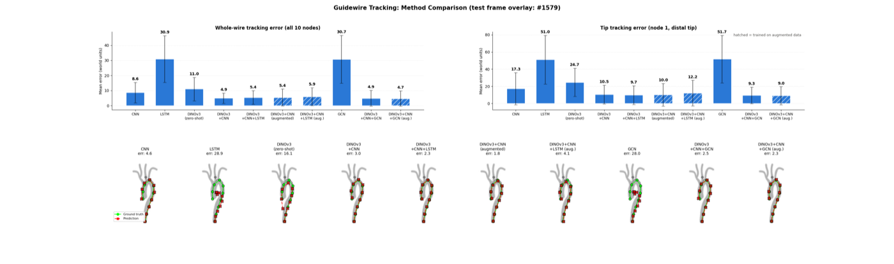
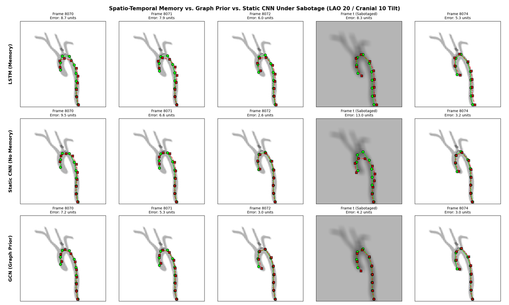

Vision Models for Guidewire Tracking in Fluoroscopy

The problem
Autonomous and semi-autonomous endovascular navigation needs a reliable perception layer: the system must know exactly where the guidewire is, in every frame, without radio-opaque markers. This project is the vision component of a larger world model for that task — and asks a focused question: what actually drives tracking accuracy? Learned spatial features, self-supervised foundation-model representations, temporal memory, or an explicit kinematic-chain prior?
Setup
I generated 10,000 simulated fluoroscopy frames (96×96 px) in the physics-based stEVE endovascular simulator, each episode a distinct, randomly generated aortic-arch anatomy. Using a verified chronological split — 8,000 training frames against 2,000 held-out test frames with no episode boundary crossed — each model regresses the 10 guidewire nodes (tip to base) per frame. All temporal models use a causal 3-frame window consistent with live deployment.
The ten architectures
I compared raw-pixel baselines (CNN, LSTM, GCN) against DINOv3-backed pipelines: a zero-shot linear probe, a DINOv3+CNN adapter, and that adapter augmented with temporal (LSTM) or graph (GCN) heads — each also in a domain-randomised training variant. This isolates the individual contribution of every component on an otherwise identical trunk.
Key results
Feature representation, not temporal or graph modelling, was the dominant determinant of accuracy. Errors are in simulator world units (field of view 158.85 × 309.81 units):
- DINOv3+CNN reached 4.92 units whole-wire error — a 1.8× improvement over the best raw-pixel model (CNN, 8.62) and 2.2× over the DINOv3 zero-shot probe (10.96).
- Best overall: DINOv3+CNN+GCN (augmented) at 4.65 units (tip error 8.99), localising the wire to within ~3.1% / 2.1% of the field of view per axis.
- Raw-pixel LSTM and GCN collapsed to a constant, input-independent output (~30.9 units, exactly zero frame-to-frame movement) — without strong spatial features, they failed to learn image-conditioned tracking at all.
- A Friedman omnibus test confirmed the pipelines are not interchangeable (χ²(9)=65.67, p=1.07×10⁻¹⁰).
Robustness: where temporal memory earns its place
On clean sequences, adding an LSTM to strong features barely changed accuracy. Its value showed up under stress. In a sabotage benchmark injecting one heavily corrupted frame per episode, the temporal model’s error barely moved (−0.14 units) while the memoryless CNN’s error more than tripled (+11.48 units). This difference was statistically significant with the maximum possible effect size (Wilcoxon, Holm-corrected p=0.0039, r=−1.00, all 10 episodes agreeing) — a bounded worst case at no cost to clean-sequence accuracy, which is arguably the more clinically relevant safety property for autonomous navigation.

Takeaways
Fine-tuned self-supervised foundation-model features are the decisive ingredient for guidewire tracking, delivering sub-2%-of-FOV accuracy without temporal or graph information. Temporal architecture, meanwhile, should be evaluated on robustness rather than clean-sequence accuracy. As with all single-simulator, single-seed studies, these findings would need replication across additional anatomies and training seeds before generalising — a limitation I document explicitly in the thesis.